Parte 1
Seguridad en la construcción de redes troncales
Cubre los pasos 1 a 4 del procedimiento. Ver en YouTube (se abre en otra pestaña)
Construcción de un tramo de red troncal de fibra óptica en terreno: la seguridad que la precede, el tendido del cable entre postes y la fijación con herrajes, retenciones y tensionado controlado.
Material de apoyo formativo. Los procedimientos de este módulo son pautas generales de capacitación. En obra se aplican junto con el protocolo de seguridad y salud en el trabajo de la empresa, las especificaciones del operador de red y el diseño de cada proyecto, y no sustituyen el criterio del ingeniero responsable.
Al terminar este módulo, el técnico estará en capacidad de:
Referencias que rigen el trabajo de una cuadrilla de redes troncales en Colombia. Debe verificarse la versión vigente de cada una y complementarse con el procedimiento de la empresa y del operador de red.
Desde el 1 de enero de 2026 rige el RETIE 2024, que reemplazó al de 2013. El poste suele ser de un operador de red eléctrica: no se perfora, no se ocupan espacios de otros operadores y cada elemento instalado queda identificado.
Serie Construcción de redes troncales, producida por NPE, en tres partes con narración y subtítulos. Siguen el orden del procedimiento de esta página; cada capítulo lleva al tema correspondiente del video.
Cubre los pasos 1 a 4 del procedimiento. Ver en YouTube (se abre en otra pestaña)
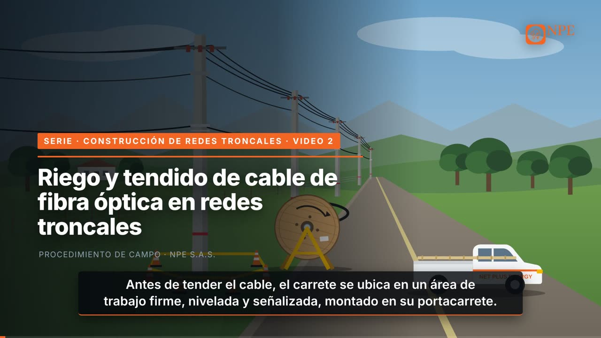
Reproducir video: Parte 2 · Riego y tendido de cable de fibra óptica en redes troncalesCubre los pasos 5 a 10 del procedimiento. Ver en YouTube (se abre en otra pestaña)
Cubre los pasos 11 a 16 del procedimiento. Ver en YouTube (se abre en otra pestaña)
Las partes 4 y 5 de la serie tienen su propio módulo en la línea de infraestructura eléctrica: Instalación de retenidas e Instalación de postes metálicos.
Así las presenta la parte 1 de la serie. Se repasan en la reunión de seguridad, antes de cualquier actividad.
Marco de referencia en Colombia: Resolución 4272 de 2021 (trabajo en alturas) y RETIE (riesgo eléctrico). En obra prevalece el protocolo de SST de la empresa.
Secuencia de referencia para construir un tramo de red troncal. Los pasos siguen el orden de las tres partes de la serie de video.
Datos que el video no muestra: cifras, criterios y la razón de algunos pasos. El tema completo está en el material educativo complementario (PDF).
La Resolución 4272 de 2021 aplica cuando hay riesgo de caída de más de 2 m. La resistencia mínima del punto de anclaje, por persona conectada, depende del sistema:
| Sistema | Para qué sirve | Anclaje mínimo |
|---|---|---|
| Restricción | Impide llegar al borde desde donde se podría caer. | 1.000 lb (4,5 kN) |
| Posicionamiento | Sostiene al liniero contra el poste con las manos libres. | 3.000 lb (13,3 kN) |
| Detención de caídas | Detiene una caída en curso. | 5.000 lb (22,2 kN) |
En campo: la faja de posicionamiento sostiene al liniero pero no detiene una caída, así que no reemplaza al sistema de detención. En el sistema contra caídas no se usan mosquetones de seguro de rosca.
El cable ADSS es totalmente dieléctrico, pero la pita húmeda, las herramientas y el cuerpo del trabajador sí conducen. El riesgo aparece por contacto directo, por una parte energizada por falla (un herraje, una retenida) o por arco, sin llegar a tocar.
En campo: la protección es no acercarse: identificar los circuitos y respetar las distancias del RETIE vigente. Con tormenta, se suspende.
Superar la tensión máxima de instalación o doblar el cable más de lo permitido daña las fibras sin dejar marca en la chaqueta. La regla general de radio mínimo de curvatura es de 20 veces el diámetro mientras se hala y de 10 veces ya instalado.
Halando: 20 × 12 mm = 240 mm de radio. Instalado, en reservas y bajantes: 10 × 12 mm = 120 mm.
En campo: prevalece la ficha técnica del cable que se instala; la regla general es solo orientativa.
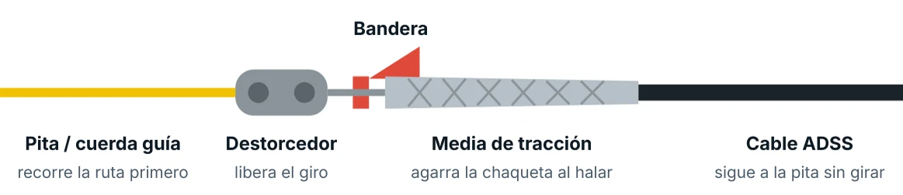
El destorcedor impide que la torsión de la cuerda pase al cable. La bandera, pegada detrás, deja ver si aun así el cable gira. La media de tracción está hecha para halar, no para sostener el cable en su tensión final.
En campo: si la bandera gira, se detiene el halado y se libera la torsión. Al terminar, la carga pasa a la retención helicoidal y se retira la media.
En campo: las varillas se asientan a mano, sin alicate, y la retención nunca se corta.
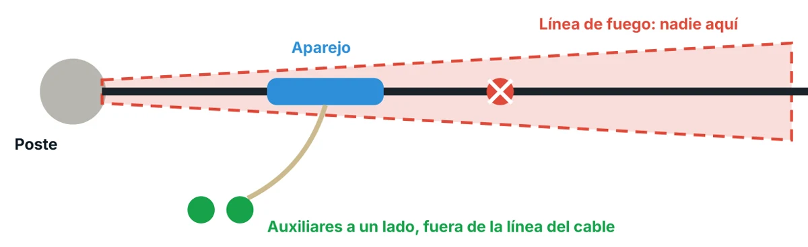
El cable, la cuerda y el aparejo en tensión acumulan energía: si algo se suelta, sale disparado a lo largo de esa línea. Además, el anclaje no recibe solo la fuerza de quienes halan: con un aparejo 4:1, 250 N en la cuerda ponen unos 1.000 N en el cable, y el anclaje carga del orden de esos 1.000 N.
En campo: el anclaje se verifica para la carga del cable, no para la fuerza de halado, y el cable se tensiona a la flecha de la tabla del fabricante, nunca “a ojo”.
Equipos y materiales del procedimiento, fotografiados en obras de NPE.
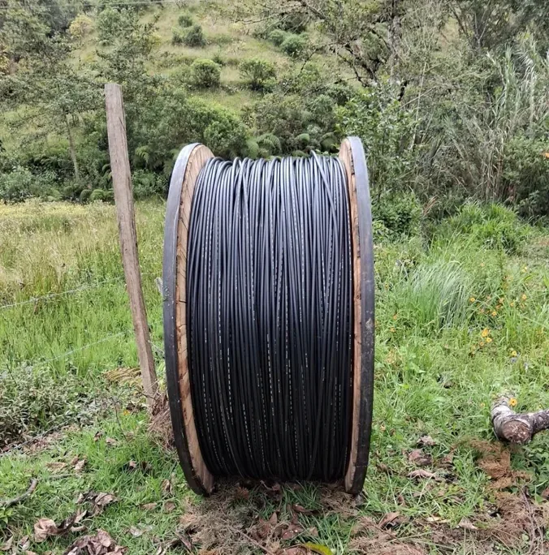
Carrete de cableCable ADSS de 48 fibras, montado en su portacarrete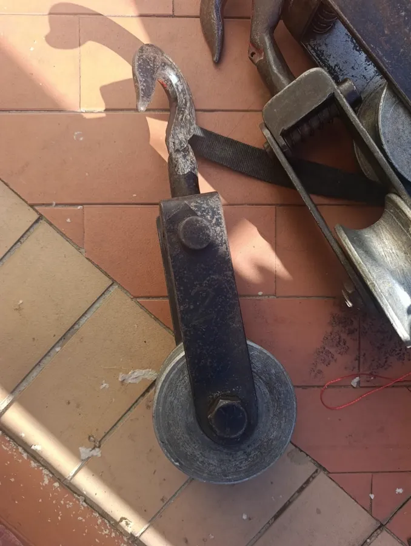
Poleas de tendidoReciben y acompañan el cable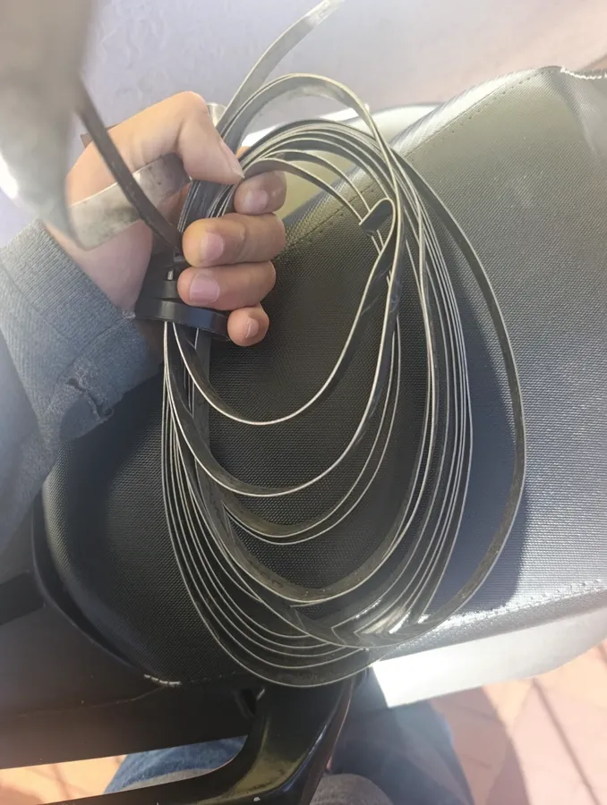
Fleje de acero inoxidableRollo para vestir el poste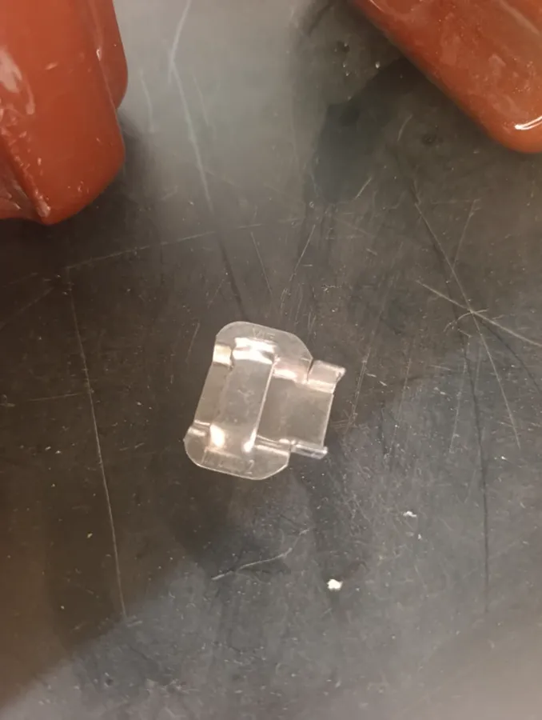
HebillaCierra y asegura el fleje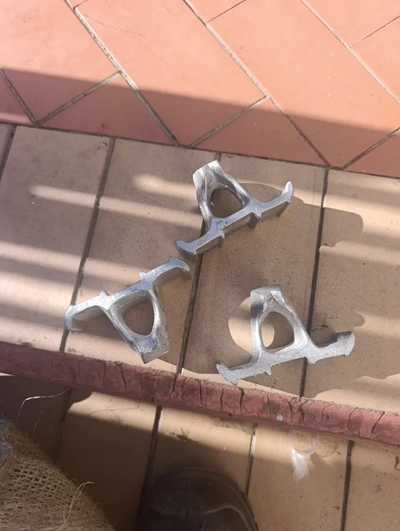
Herraje de retenciónPunto donde se conecta el lazo de la retención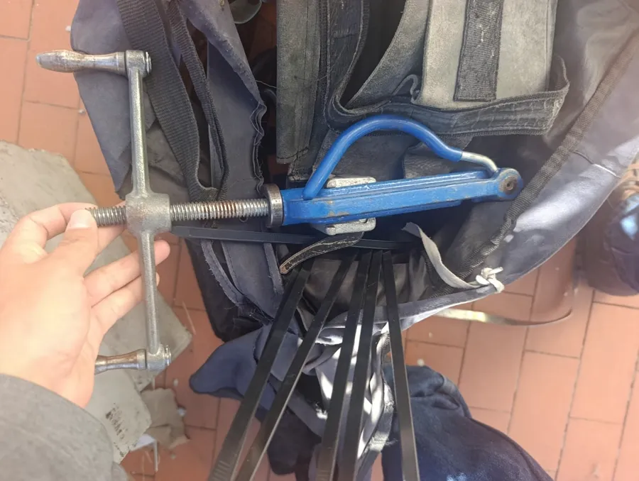
Herramienta tensoraTensa y cierra el fleje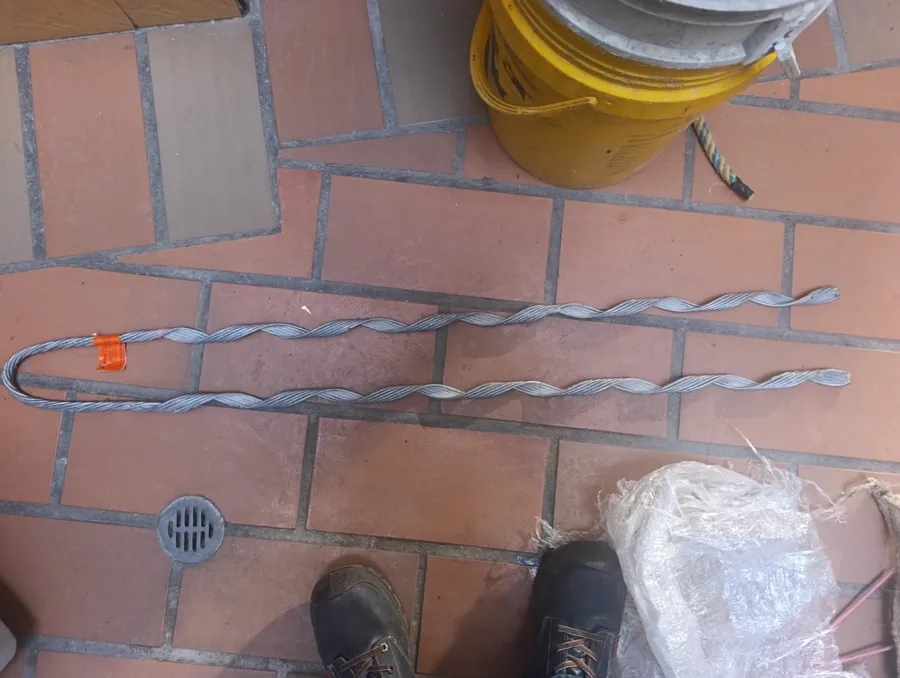
Retención helicoidalSujeta el cable al herraje; referencia según el cable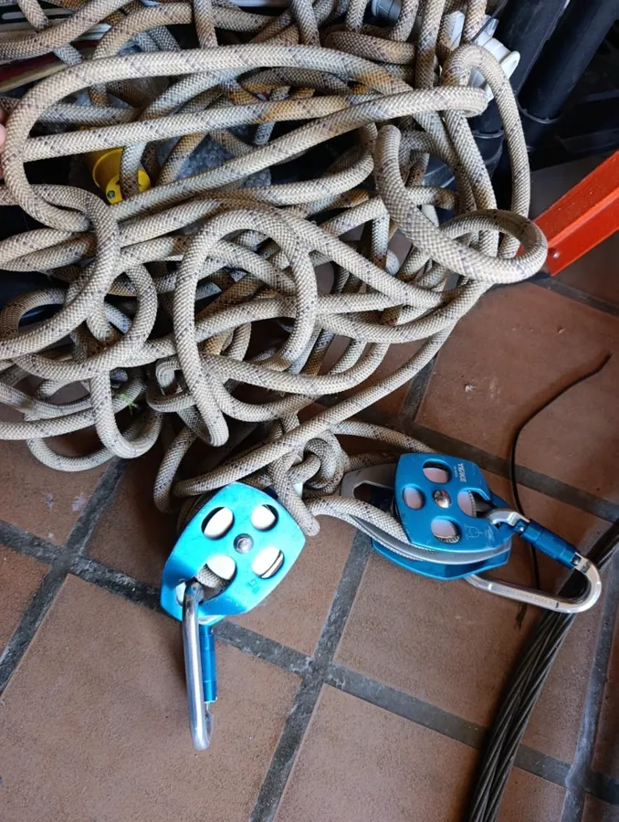
AparejoCuerda, poleas y mosquetones con seguro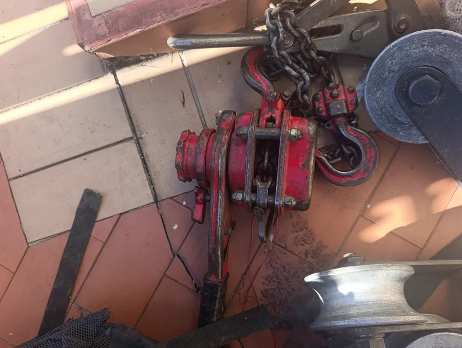
Polipasto de palancaTensiona y sostiene la carga con cadenaElementos que cada trabajador inspecciona antes de usarlos. El sistema de protección contra caídas es el que exija la tarea.
| Peligro | Severidad | Control |
|---|---|---|
| Caída de altura | Alta | Autorización, capacitación y sistema de protección contra caídas para trabajo en alturas. Arnés y conectores inspeccionados antes de subir. Plan de rescate conocido por todos. |
| Contacto eléctrico | Alta | Identificar circuitos energizados, su altura y la cercanía del trabajo. Respetar las distancias de seguridad del RETIE y del procedimiento. Cable y cuerdas alejados de la red eléctrica. |
| Caída de herramientas y materiales | Alta | Zona inferior del poste delimitada y señalizada. Herramientas aseguradas o en bolsa portaherramientas. |
| Latigazo o línea de fuego | Alta | Nadie dentro de la curva de la cuerda ni en la línea de fuego. Nadie sostiene con las manos un elemento bajo tensión. Tensionado progresivo y con orden. |
| Falla de anclaje o del equipo de tracción | Alta | Puntos de anclaje verificados y autorizados. Aparejo, cuerda, media y destorcedor usados dentro de su capacidad. |
| Atrapamiento con el carrete | Media | Giro al ritmo del tendido y detención progresiva. Sin vueltas cruzadas ni cable acumulado en el piso. |
| Sobreesfuerzo al cargar la chipa | Media | Carga repartida entre varios auxiliares; nadie lleva más de lo que puede manejar con seguridad. |
| Tránsito vehicular | Media | Conos y cinta en la vía, chaleco reflectivo y vigilancia del supervisor. |
| Condiciones climáticas | Media | Evaluar el clima en la reunión de seguridad y suspender la actividad ante condiciones inseguras. |
| Operación del dron | Media | Piloto autorizado, recorrido inspeccionado y distancia a redes eléctricas, personas y estructuras. |
Fotos de las troncales de NPE en el Putumayo, en el orden del procedimiento. Haga clic en una foto para verla en tamaño completo.
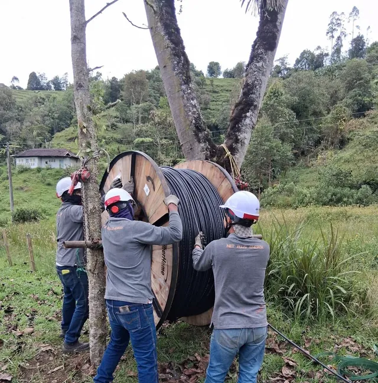

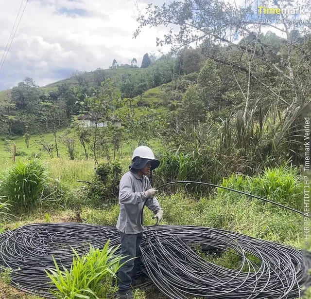
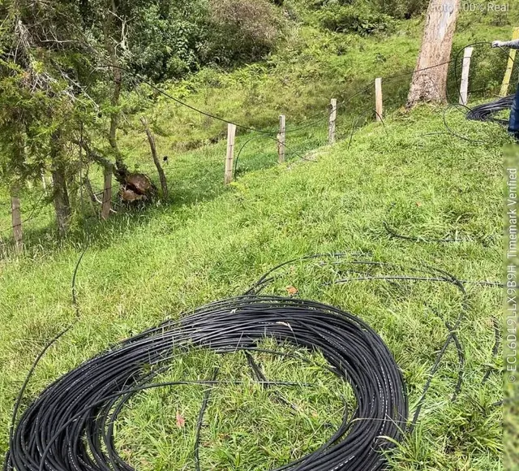
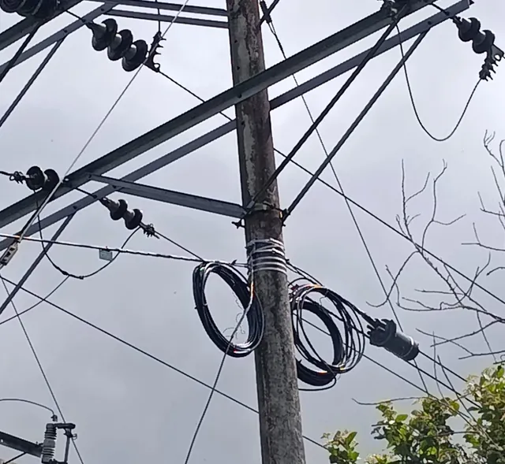
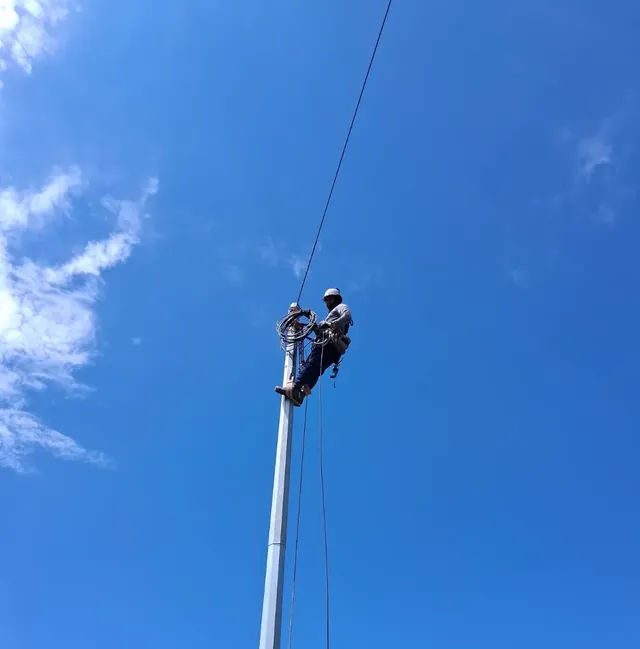
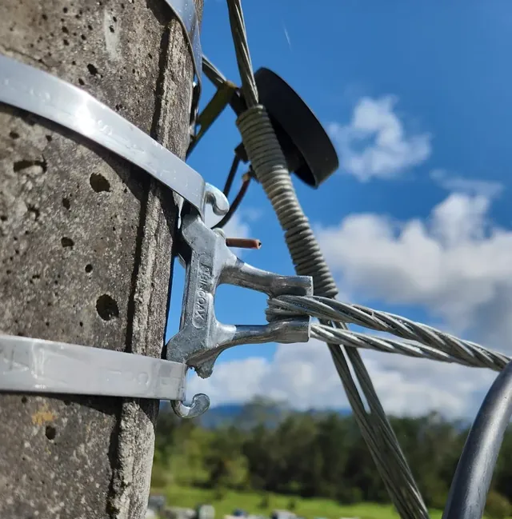
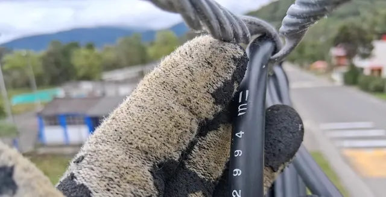
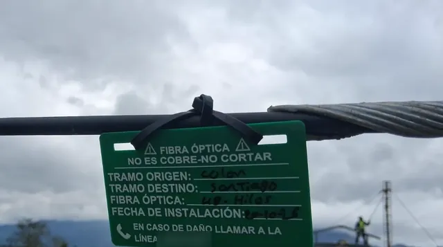
Una pregunta por cada clave técnica. Respóndala y luego ábrala para comprobar.
5.000 lb (22,2 kN). El de posicionamiento pide 3.000 lb y el de restricción 1.000 lb.
Porque la pita húmeda, las herramientas y el cuerpo sí conducen, y el arco puede saltar sin tocar el conductor.
20 × 15 mm = 300 mm de radio, salvo que la ficha técnica indique otro valor.
Detener el halado y liberar la torsión: el cable está girando.
No. Solo se reaplica, hasta tres veces, durante la instalación inicial; después se usa una nueva.
Para la carga del cable, no para la fuerza de quienes halan.